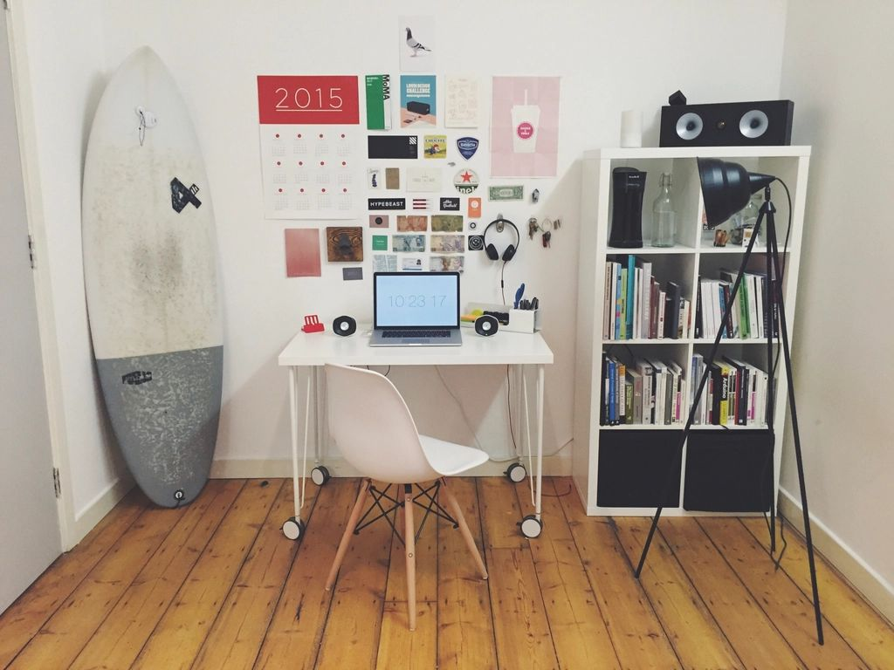
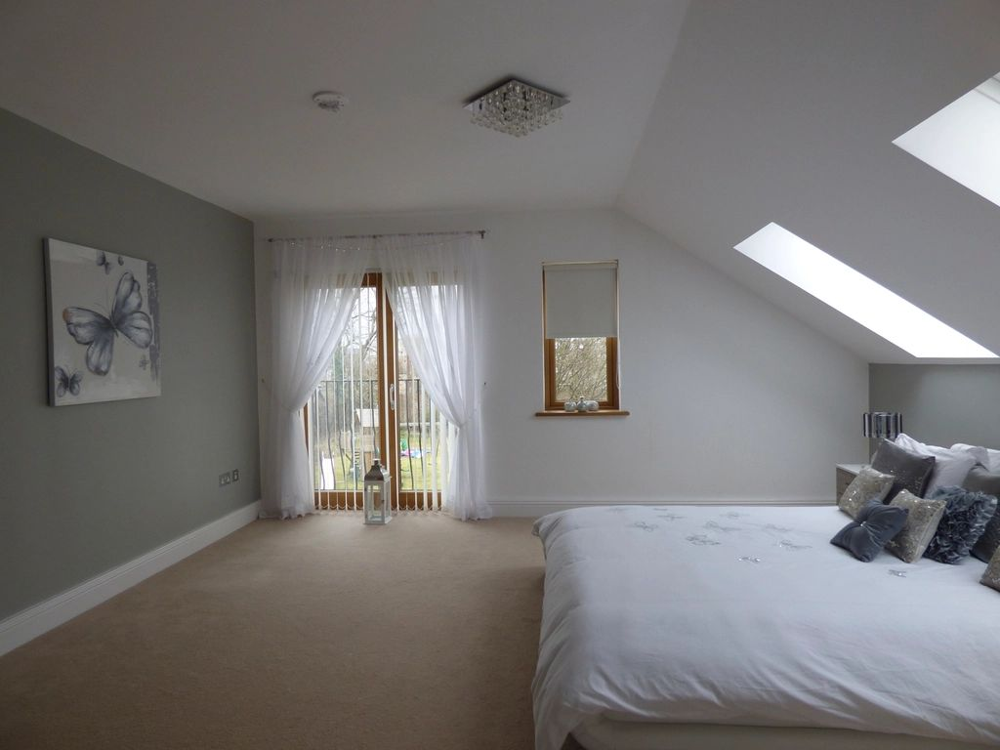
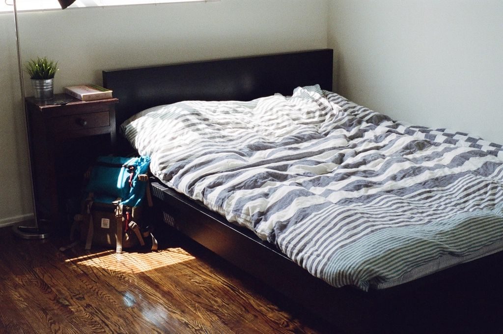

Second bedrooms, kids' rooms and guest rooms in 2BHK and 3BHK apartments are often compact. With the right planning, a small bedroom can still feel open and hold everything you need.
1. Choose a storage bed
A hydraulic or drawer bed turns the biggest piece of furniture into the biggest storage unit.
2. Use sliding wardrobe doors
Sliding shutters don't need swing space, so you can place furniture closer to the wardrobe. Mirrored sliders also make the room look larger.

3. Go vertical
Take wardrobes and shelves up to the ceiling and use lofts for rarely used items. Floor space is precious; wall space often isn't.
4. Mount the desk on the wall
A wall-mounted or fold-down desk works for study or work-from-home without permanently eating floor space.
5. Keep colours light
White, cream and soft pastels reflect light and make walls recede. Use one darker accent wall behind the bed if you want depth.

6. Pick furniture with legs
Side tables and chairs on slim legs show more floor, which makes the room feel less crowded.
7. Light it from several points
Wall lights or pendants beside the bed free up side-table space, and a few spotlights brighten corners.
8. Use the space above the door
A shelf or loft above the door is ideal for suitcases and seasonal bedding.

9. Plan multi-use furniture
A sofa-cum-bed or daybed lets a small room double as a study or guest room.
10. Keep it uncluttered
Closed storage, a few well-chosen décor pieces and clear surfaces make a small room feel calm and intentional.
Manzil Homes plans compact rooms in apartments across Vizag (including MVP Colony and Madhurawada) and Hyderabad (including Gachibowli), with 3D designs before execution.